El pozole es un caldo tradicional mexicano hecho a base de granos de maíz nixtamalizados, comúnmente de la variedad cacahuazintle, al que se agregan carnes, verduras y especias muy variadas según la región.
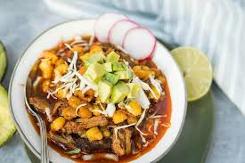Los chiles rellenos, son un platillo que consiste principalmente en chiles pimiento «con algo adentro», sin importar su decoración exterior.
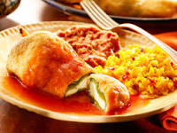Guiso que se prepara con panza de res en caldo, al que se agrega arroz, carne picada, ajo y cominos
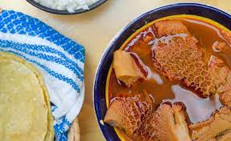El término mole se refiere a varios tipos de salsas mexicanas muy condimentadas hechas principalmente a base de chiles y especias, y que son espesadas con masa de maíz, tortilla o pan; también se refiere a los mismos guisos
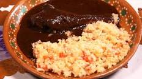Caldo de pollo es una sopa latinoamericana común que consiste en pollo y verduras.
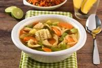Tortitas hechas con papa cocida y machacada, mezclada con huevo, leche, sal y queso. Se fríen en poco aceite hasta que se doran de ambos lados
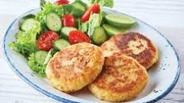Bola pequeña hecha de carne o pescado picados y mezclados con huevo, pan rallado y especias que se reboza en harina, se fríe y generalmente después se cocina con una salsa; se sirven varias por ración.
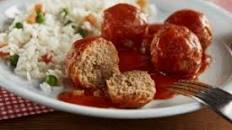BistecTrozo de carne extraída de diversas piezas tiernas de vacuno o cerdo, para cocinar al natural o empanado (frito).
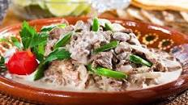Caldo elaborado con carne de res con hueso, pescuezo e incluso cola, y diversas verduras, garbanzos o arroz. Puede ser translúcido o rojo cuando se condimenta con diferentes chiles.

El taco dorado es un platillo de México muy popular en otros países alrededor del mundo, y consiste en una pequeña tortilla doblada y con algún tipo de relleno, normalmente a base de carne de ternera o de pollo.
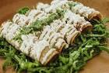Las enchiladas son un plato de la gastronomía de México y Centroamérica, en cada país la preparación e ingredientes son diferentes, en México se elabora con tortillas de maíz enrolladas o dobladas y bañadas en alguna salsa picante.
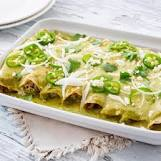El empanado, empanizado o apanado es una técnica culinaria consistente en recubrir con pan rallado un alimento determinado, como por ejemplo: carnes, pollo, pescados, tofu, soja texturizada, etcétera; antes de realizar una fritura con aceite o mantequilla.
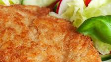El pambazo es un emparedado mexicano, cuyo relleno varía según la región en la que se consuma, siendo los rellenos tradicionales de papa, y de papa con chorizo. El nombre proviene del pan que usa, el pan bazo
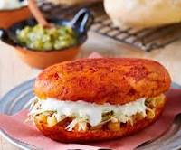Los sopes son una comida mexicana que consiste en una tortilla gruesa y ancha, «pellizcadas» por las orillas para formarle bordes y frita en manteca. Sobre ella se añaden diferentes ingredientes como chicharrón o carne, queso, verduras y salsa picante, con variaciones regionales
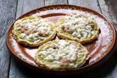Los chilaquiles son un plato típico mexicano elaborado con tortillas cortadas, fritas o tostadas que se cocinan en una salsa picante ya sea roja o verde dependiendo del tipo de chile usado y tiene multitud de variantes regionales
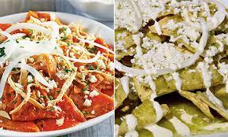En la gastronomía de México, el mole de olla es un platillo típico del centro del país, a base de verduras y carne
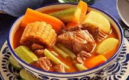Una sopa fría es tambien una persona que va a todas las invitaciones sociales sin excepción con el fin de tomarse fotos con las personas que conviven en dichos eventos interpretando
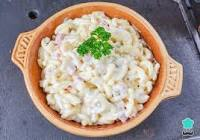Sopa elaborada con fideos fritos, escurridos y hervidos en un caldillo de jitomate preparado con agua o caldo de pollo, cebolla, ajo y jitomate molido; si la sopa queda muy líquida entonces se clasifica dentro de la gran familia de las sopas aguadas que forman parte de las comidas del mediodía o del menú de las comidas
La sopa de letras es una receta culinaria cuya característica distintiva, y que a la vez le da nombre, es la pasta con que se prepara, que tiene la forma de las letras del alfabeto y los números del 0 al 9.
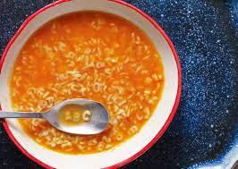Nombre que designa a una gran variedad de sopas elaboradas con pastas de harina de trigo. El nombre de este platillo cambia según la forma o figura de la pasta; puede ser sopa de macarrones, de fideos, de letras.
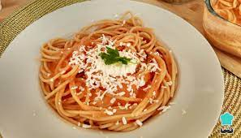